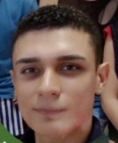
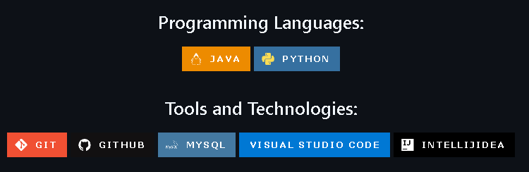

Hello! I'm Querley!

↑ Click it! ↑
Summary:
I'm a programming student based in Brazil, currently working towards
becoming a full time Web Developer and getting my Systems Analysis and
Development degree. I hope to achieve these by the end of 2026, at
the latest.
Education:
- High School: Completed. IFG.
-
Higher Education: Bachelor’s degree in Systems Analysis
and Development.
- Status: In progress, third semester.
- Institution: SENAI Fatesg.
- Course: English (Fluent)
Other Courses:
- Microsoft Office Package (completed)
- Computer Networks Fundamentals (completed)
- Introduction to Computer Maintenance (completed)
- Artificial Intelligence Fundamentals (completed)
- Santander Java Back-end Bootcamp (completed) – DIO
- Full-Stack Web Development Bootcamp (in progress) – Udemy
Tools and Languages:

Work Experience:
- Academic Research: PIBIC - IFG
- Position: Researcher
- Period: 2019 (2 semesters)
- I joined a research team at the Federal Institute of Goiás, focusing on the development of translucent and phosphorescent fiberglass composites.
- Academic Research: SENAI
- Position: Researcher
- Period: 2024 (1 semester)
- I joined a research team at SENAI focusing on low-code development. Although the project was not approved for the second phase, I gained experience in collaborative work and the exploration of emerging technologies.
- Company: Fisk
- Position: Teacher
- Period: 10/01/2021 to 03/15/2023
- Company: Self-employed
- Position: Private English Teacher, Translator, and Interpreter
- Period: 03/16/2023 to Present
- Company: KompuTI Tecnológica e Soluções
- Position: IT Intern
- Period: 09/10/2024 to 12/20/2024
Contact Me: